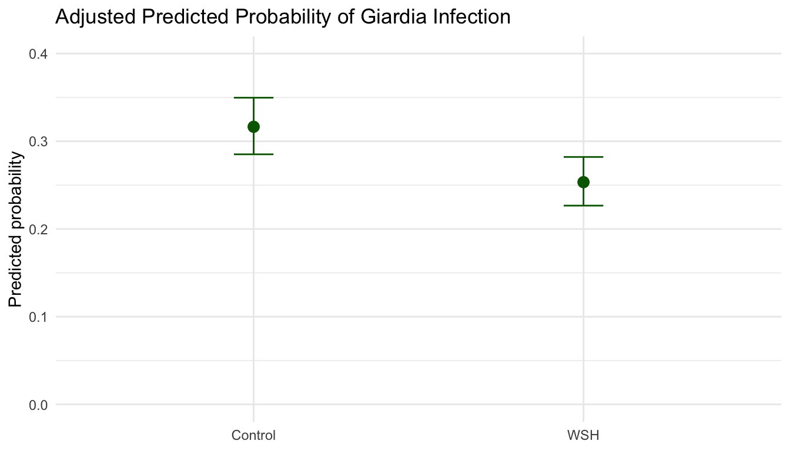

This guide introduces binary limited dependent variable models for applied researchers. It compares the linear probability model, logit, and probit; explains odds, probabilities, marginal effects, and uncertainty; and gives practical guidance for model assessment and reporting.
Keywords
Binary Response Models, Limited Dependent Variables, Linear Probability Model, Logistic Regression, Probit Regression, Maximum Likelihood Estimation, Odds Ratios, Predicted Probabilities, Marginal Effects.
Introduction
Many research questions involve outcomes that are inherently binary, taking one of only two possible values. Examples include whether a patient survives or dies, whether a student graduates or drops out, and whether a loan applicant defaults or repays. These outcomes are typically coded 0 and 1, where 1 conventionally indicates the presence of the event or condition of interest. Because the response variable takes only two values, the central quantity of interest is a conditional probability:
\[
p_i = \Pr(Y_i = 1 \mid X_i)
\]
Modeling this probability requires care. Ordinary regression can produce impossible fitted values and heteroskedastic errors.1 This guide explains how to handle binary outcomes correctly, starting with why ordinary regression struggles and building toward the logit and probit models.
To get the most from this guide, we suggest that researchers begin by identifying whether their research goals are inferential or predictive in nature. A model used for inference is judged by the estimand, identification, and uncertainty; a model used for prediction is judged by calibration, discrimination, and validation. To learn more about how these goals dictate appropriate use, see our FAQ on inference versus prediction.
By the end of the guide, you should be able to:
Recognize what the linear probability model estimates and when it is useful.
Fit and compare logit and probit models.
Convert log odds, odds, and odds ratios into predicted probabilities.
Estimate marginal effects and risk differences.
Communicate uncertainty around predicted probabilities and contrasts.
Choose model diagnostics that match your inferential or predictive goal.
Examples in this guide draw on data and course design from BIS 505 at Yale University, taught by Prof. Lee Kennedy-Shaffer.
Binary Outcomes and Moments
Each observation of a binary outcome is a single trial with some probability \(p_{i}\) of success. That probability corresponds to a Bernoulli distribution:
\[
Y_i \sim \text{Bernoulli}(p_i)
\]
For a Bernoulli outcome, the mean and variance are:
\[
E(Y_i \mid X_i) = p_i
\]
\[
\text{Var}(Y_i \mid X_i) = p_i(1 - p_i)
\]
Two things follow directly. First, the conditional mean is a probability, so any model for \(E(Y_i \mid X_i)\) is a model for the probability of the event. Second, the variance depends on the mean: it is largest near 0.5 and shrinks toward the boundaries. This is why the homoskedasticity assumption behind ordinary least squares does not hold for binary outcomes. That does not make OLS useless. It means you need to know what the linear probability model is doing and where it runs into trouble.
The Linear Probability Model
When OLS is used to regress a binary outcome \(Y_{i}\) on predictors, the estimator is known as the linear probability model (LPM). The name for the LPM is derived from the fact that because \(E(Y_i \mid X_i) = p_i\), the fitted value is interpreted as a predicted probability:
\[
\widehat{p}_i = X_i'\widehat{\beta}
\]
The main advantage of the LPM is that coefficients are easy to interpret. Under the LPM, each coefficient is a risk difference: the change in the probability of the event for a one-unit change in the predictor, holding other variables fixed. A coefficient of −0.05, for example, means a 5 percentage point lower probability of the event. With a binary predictor, the coefficient is simply the probability difference between the two groups. Risk differences are directly interpretable and can be compared across studies.
Warning
Out-of-bounds predictions: When baseline probabilities are well away from 0 or 1 (roughly 0.2 to 0.8 for most covariate values), the LPM’s out-of-bounds predictions are rarely a practical problem. When predicted values fall outside [0, 1] for a large share of the sample, or when the research goal requires well-calibrated probabilities at the boundaries, switch to logit or probit.
For many applied problems, especially causal designs with a clear estimand and moderate probabilities, the LPM is a useful baseline. Use heteroskedasticity-robust or cluster-robust standard errors, and compare its risk differences with logit/probit average marginal effects rather than with logit/probit coefficients. Logit and probit address these limitations by applying a link function that keeps predicted probabilities within the [0, 1] range.
Generalized Linear Models for Binary Outcomes
Despite the conveniences of the LPM, there are a few drawbacks. Using OLS can sometimes produce predicted values that fall below zero or above one, violating the natural bounds of a probability. The linear function can also be a poor approximation when probabilities change sharply over the observed data. Finally, the standard errors of the LPM are heteroskedastic by construction because the variance of a binary outcome depends on the predicted probability \(\text{Var}(u_i \mid x_i) = \hat{p}_i(1 - \hat{p}_i)\). These features make OLS ill suited for prediction. Generalized Linear Models or GLMs are a useful alternative. Unlike OLS, which presumes linear dependencies between outcomes and covariates, GLMs apply a link function \(g\) to smooth over predicted values that fall outside of the range of observed values:
\[
p_i = g(\eta_i) = g(X_i'\beta)
\]
For a binary outcome, the two most common link functions are the logistic CDF and standard normal CDF. In regression settings these two links are informally referred to as logistic (logit) and probit regression. As shown in the figure below, both estimators transform a linear index into a probability between 0 and 1 by applying a sigmoidal function. The main difference between the two functions is in the tails. Logistic regression has fatter tails than the probit model, meaning predicted probabilities approach zero and one more gradually. In practice, the two estimators usually produce similar probabilities and marginal effects across the covariate distribution. Differences between these two models only become material when predicted probabilities are themselves extreme, as in rare-event settings or out-of-sample extrapolation. While probit may sometimes be preferred if the underlying error structure of a model is plausibly Gaussian, the decision to use probit or logit is mostly a preference question.
The choice of \(F\) defines the model:
Model
Probability model
Main practical consequence
Linear probability model
\(p_i = X_i'\beta\)
Easy risk-difference interpretation, but predictions can fall outside \([0,1]\).
Logit
\(p_i = \Lambda(X_i'\beta)\)
Uses the logistic curve; coefficients can be exponentiated into odds ratios.
Probit
\(p_i = \Phi(X_i'\beta)\)
Uses the standard normal curve; common in latent-index traditions.
Code
curve_data <-tibble(eta =rep(seq(-4, 4, length.out =200), 3),model =rep(c("LPM", "Logit", "Probit"), each =200)) |>mutate(probability =case_when( model =="LPM"~0.15* eta +0.5, model =="Logit"~plogis(eta), model =="Probit"~pnorm(eta) ) )ggplot(curve_data, aes(x = eta, y = probability, color = model, linetype = model)) +geom_line(linewidth =1.1) +geom_hline(yintercept =c(0, 1), linetype ="dotted", color ="gray60") +scale_color_manual(values =c("LPM"="#E69F00", "Logit"="#0072B2", "Probit"="#009E73")) +scale_linetype_manual(values =c("LPM"="dashed", "Logit"="solid", "Probit"="solid")) +scale_y_continuous(limits =c(-0.15, 1.15), breaks =c(0, 0.25, 0.5, 0.75, 1)) +labs(x =expression(paste("Linear index ", eta)),y ="Predicted probability",color =NULL, linetype =NULL ) +theme_minimal() +theme(legend.position ="bottom")
Log odds (logit): The natural log of the odds, \(\log(p/(1-p))\). Log-odds run from \(-\infty\) to \(+\infty\), making it a natural quantity for a linear model. A log-odds of 0 corresponds to a probability of 0.5; positive values correspond to probabilities above 0.5.
Odds: The ratio \(p/(1-p)\). Odds of 2 mean the event is twice as likely to occur as not to occur, corresponding to a probability of \(2/3 \approx 0.67\).
Note
A latent-variable story is another way to motivate the same models. Imagine an unobserved continuous propensity, risk, or utility:
\[
Y_i^* = X_i'\beta + \epsilon_i
\]
We do not observe \(Y_i^*\) directly. We only observe whether it crosses a threshold:
If the unobserved error \(\epsilon_i\) is logistic, the model is logit. If it is standard normal, the model is probit. This story can be useful, but the latent score itself is usually not the quantity practitioners should report.
Maximum Likelihood Estimation
Because binary outcomes do not have normally distributed residuals, the OLS criterion of minimizing squared residuals is no longer the natural objective. Logit and probit are instead estimated by maximum likelihood. The goal is to find the coefficient vector \(\beta\) that makes the observed pattern of 0s and 1s as probable as possible under the model.
For each observation, the likelihood contribution depends on what was actually observed. If \(Y_i = 1\), the contribution is the model’s predicted probability \(p_i\); if \(Y_i = 0\), it is one minus that probability. Formally:
\[
L_i(\beta) = p_i^{Y_i}(1 - p_i)^{1 - Y_i}
\]
The full likelihood is the product of these contributions across all observations:
We want this product to be as large as possible. In practice, software maximizes the log-likelihood, which converts the product to a sum and is more numerically stable:
The maximum is found by numerical optimization, often using Newton-Raphson, Fisher scoring, or iteratively reweighted least squares in standard binary GLMs; more complex likelihoods, such as mixed-effects models, may use other constrained or derivative-free optimizers.2 Standard errors come from the curvature of the log-likelihood at the maximum: a sharper peak means more precise estimates and smaller standard errors. If the model is misspecified, observations are clustered, or the sample has unusual dependence, model-based standard errors can be too optimistic. In those cases, use robust or cluster-robust standard errors.
Implementation
The sections below demonstrate how to fit the LPM, logit, and probit to the same outcome and predictors. Keeping the specification constant across models makes it straightforward to see where they agree, where they diverge, and why the choice of reporting scale often matters more than the choice of link function.
Data
The example uses the WASH Benefits Bangladesh data discussed in Lin et al. (2018). We model whether a child had Giardia infection (Giardia) using treatment assignment and covariates.
Download the Data
Paper:Lin, A., et al. (2018). Effects of water, sanitation, handwashing, and nutritional interventions on environmental enteric dysfunction in young children: WASH Benefits Bangladesh. Clinical Infectious Diseases, 67(10), 1515–1526.
Data: The WASH Benefits Bangladesh data used in this example are available from the Open Science Framework project. The example models whether a child had Giardia infection (Giardia) using randomized treatment assignment and child- and household-level covariates. We use a derived dataset from the original data, which can be accessed via this link: washb-index.csv
With the data loaded, the treatment variable factored with the control group as the reference, and age converted to months, the next step is to examine unadjusted event rates directly before reaching for a regression model.
Descriptive Risk
Before fitting a model, compute the event rate by group. This is the simplest estimate of risk.
These raw event rates are the simplest possible estimate of risk by group. Any model-adjusted estimate should be broadly reconcilable with them; if adjusted and unadjusted estimates diverge substantially without a clear explanation it can be worthwhile to investigate. (See Why Do My Adjusted and Unadjusted Estimates Diverge?.)
Linear Probability Model
The linear probability model estimates risk differences directly by regressing the binary outcome on predictors using OLS. Because binary outcomes are heteroskedastic by construction, the default standard errors are biased; always use robust standard errors when reporting LPM results.
usingGLM, StatsModelslpm =lm(@formula(Giardia ~ WSH + AgeMonths + NumChildren + DistanceH20), wshi)coeftable(lpm)# For robust standard errors in Julia, use CovarianceMatrices.jl:# vcov(HC1(), lpm)
The WSH coefficient is an adjusted risk difference: a negative value means the WSH group has a lower probability of infection than the control group, after accounting for age, household size, and distance to water. A coefficient of \(-0.03\), for example, means a 3 percentage point lower risk of infection. These estimates are already on the probability scale and require no transformation. The nonlinear models below estimate the same relationship on the log-odds or probit scale; translating them back to probability differences requires additional steps, covered in the sections that follow.
Logit Model
The logit model applies the logistic link function to keep predicted probabilities within the (0, 1) interval. Rather than estimating probability differences directly, it models the log-odds of the outcome as a linear function of the predictors.
The Estimate column gives log-odds coefficients: each value is the change in log-odds of the outcome for a one-unit increase in that predictor, holding others constant. A negative coefficient on WSHWSH means the WSH group has lower log-odds of Giardia infection than the control group. The magnitude is not directly interpretable as a probability difference.
Probit Model
The probit model uses the standard normal CDF as its link function rather than the logistic curve.
The probit coefficients are on the standard normal scale and are not directly comparable in magnitude to the logit coefficients. As with the logit, the most interpretable summaries come from converting to predicted probabilities or average marginal effects, covered in the sections below.
Note
Standard error choice for logit and probit. The right SE depends on your sampling design, treatment assignment, clustering, repeated measurements, and study design and not the choice of link function. For logit and probit, robust or cluster-robust covariance choices affect coefficient SEs, Wald tests, and uncertainty intervals for marginal effects and predicted contrasts. They do not change MLE point estimates. See the Standard Errors guide.
Convert Logit Coefficients to Odds Ratios and Confidence Intervals
The logit coefficients are on the log-odds scale, which is rarely interpretable on its own. Exponentiating each coefficient transforms it into an odds ratio: a multiplicative comparison of the odds of the event between two conditions. Odds ratios are the conventional reporting scale in clinical epidemiology and case-control studies, and they appear as the default output in many published tables. Confidence intervals for odds ratios are obtained by exponentiating the confidence interval endpoints for the corresponding log-odds coefficient.
Note
Odds ratio (OR): The ratio of the odds of the event under two conditions. An OR of 1 means equal odds. An OR of 2 means the odds are twice as high in the exposed group. The OR is a multiplicative comparison of odds, not of probabilities.
Each row shows a predictor’s log-odds coefficient alongside its exponentiated counterpart, the odds ratio. An odds_ratio greater than 1 indicates higher odds of the event; less than 1 indicates lower odds — for example, an odds_ratio of 0.80 for WSHWSH would mean the WSH group has 20% lower odds of Giardia infection than the control group, adjusting for the other covariates in the model.
Warning
The odds ratio is not the risk ratio. If the baseline probability is \(p_0 = 0.40\) and the OR is 0.5, the corresponding risk ratio is approximately \(0.71\), not \(0.5\). The two quantities are close only when the outcome is rare (roughly below 10%). When communicating results to a general audience, supplement odds ratios with predicted probabilities or risk differences.
Calculating Predicted Probabilities
To convert a log-odds estimate back to a probability, apply the inverse-logit transformation:
One common mistake when transforming data from log-odds back to a probability is combining odds ratios before transforming the data. Because the log-odds scale is additive, combination must happen their first; you should only exponentiate after you have combined predictors.
When combining multiple predictors, always work on the log-odds scale before transforming to probabilities. Suppose predictors A and B have odds ratios of 2 and 1.5; the combined odds ratio is \(\exp(\log 2 + \log 1.5) = \exp(1.099) \approx 3.0\), not \(3.5\).
Following the same logic, it is best to derive confidence intervals on the log-odds scale and then transform them using plogis() to ensure bounds remain \(\in [0,1]\).
ggplot(profile_pred, aes(x = WSH, y = probability)) +geom_point(size =3, color ="darkgreen") +geom_errorbar(aes(ymin = low, ymax = high), width =0.12, color ="darkgreen") +scale_y_continuous(limits =c(0, max(profile_pred$high) +0.05)) +labs(title ="Adjusted Predicted Probability of Giardia Infection",x =NULL,y ="Predicted probability" ) +theme_minimal()

Code
import matplotlib.pyplot as pltplt.errorbar( profile_grid["WSH"], pred.summary_frame()["predicted"], yerr=[ pred.summary_frame()["predicted"] - pred.summary_frame()["ci_lower"], pred.summary_frame()["ci_upper"] - pred.summary_frame()["predicted"], ], fmt="o", color="darkgreen", capsize=4,)plt.ylabel("Predicted probability")plt.xlabel("")plt.title("Adjusted Predicted Probability of Giardia Infection")plt.show()
Code
logit Giardia i.wsh_group AgeMonths NumChildren DistanceH20margins wsh_group, atmeans predict(pr)marginsplot, ///ytitle("Predicted probability") ///title("Adjusted Predicted Probability of Giardia Infection")
Code
usingPlotsscatter( profile_grid.WSH, profile_grid.probability, color=:darkgreen, legend=false, xlabel="", ylabel="Predicted probability", title="Adjusted Predicted Probability of Giardia Infection")
The WSH group has an adjusted predicted probability of Giardia infection of 0.25, compared to 0.32 in the control group. Thus, we can say that those who were treated were seven percentage points less likely to contract Giardia, all else equal. Note that this gap is smaller in magnitude than the raw log-odds coefficient (-0.31) would suggest because the inverse-logit compresses differences near 0 and 1.
Average Marginal Effects
Odds ratios and log-odds coefficients are difficult to communicate to general audiences, and neither is a probability difference. Average marginal effects translate a nonlinear model back to the probability scale, producing an estimate directly comparable to the LPM’s risk difference coefficient. For a binary predictor, the AME is the average over all observations of the individual predicted probability change when switching from the reference to the comparison category — computed at each observation’s own covariate values, not at a hypothetical average person.
The choice between marginal effects, predicted probabilities, and odds ratios is a choice about what to report, not about model fit. Report average marginal effects when your estimand is a risk difference, when you want results directly comparable to the LPM, or when communicating to readers unfamiliar with odds ratios. Use predicted probabilities at specific covariate profiles instead when absolute risk for a defined group is the quantity of interest — for example, the predicted probability of infection for a child aged 24 months assigned to the control condition. Odds ratios remain appropriate when field convention requires them (particularly in clinical epidemiology and case-control designs), but should always be accompanied by predicted probabilities or marginal effects so readers can assess magnitude on a familiar scale.
Note
Average marginal effect (AME): Each observation’s marginal effect is computed at its own covariate values and then averaged over the sample. For a binary predictor, the AME is the average predicted probability difference when you switch everyone from control to treatment.
Marginal effect at the mean (MEM): The marginal effect evaluated at the sample means of all covariates. For binary predictors, the “average person” defined by MEM may not correspond to any real observation in the data. The AME is usually preferred.
For a binary treatment indicator, the average marginal effect is the average predicted probability difference when the same observations are predicted under treatment and under control.
AMEs are estimates and need uncertainty intervals. The point estimates above show only the average probability difference. Without confidence intervals they cannot support inference. The section below shows how to compute AMEs with standard errors and CIs.
AME Confidence Intervals
For most applied work, the margins package in R and the get_margeff() method in Python’s statsmodels return AMEs with standard errors and confidence intervals using the delta method. These are easier to use than the manual g-computation above and should be the default reporting approach.
# install.packages("margins") if neededlibrary(margins)ame_with_ci <-margins(logit_fit, variables ="WSH")summary(ame_with_ci)
factor AME SE z p lower upper
WSHWSH -0.0631 0.0217 -2.9071 0.0036 -0.1056 -0.0206
Code
# get_margeff() returns AMEs with SEs and CIs by defaultmargeff = logit_fit.get_margeff()print(margeff.summary())
Code
logit Giardia i.wsh_group AgeMonths NumChildren DistanceH20* margins already returns SEs and CIsmargins, dydx(wsh_group)
Code
# Manual delta-method AME CIs in Julia require computing the Jacobian# of the AME with respect to the coefficient vector and then applying# the delta method: Var(AME) = J * vcov(fit) * J'# The Effects.jl package provides a higher-level interface for marginal effects.# using Effects# effects(Dict(:WSH => ["Control", "WSH"]), logit_fit)
Note
The margins package (R) and get_margeff() (Python) use the delta method to compute standard errors. For complex functions of the AME or for robustness checks, bootstrap confidence intervals are an alternative. For clustered data, pass cluster-robust variance matrices to the margins call via the vcov argument.
Predicted Probability Across a Continuous Predictor
A logit or probit coefficient for a continuous predictor is not a fixed marginal effect — it varies depending on all covariates. The best way to show this is to plot the predicted probability over the range of the predictor, with a confidence ribbon. The example below plots predicted probability of Giardia infection across observed child ages, holding other covariates at their sample means.
The S-shape of the curve illustrates why a single “the effect of Age” is hard to state: the slope of the probability is steepest near the midpoint and flatter at the tails. For a summary measure, report the AME or a specific contrast (e.g., predicted probability at the 25th vs. 75th percentile of Age).
Uncertainty for Predicted Probabilities
Predicted probabilities are estimates, so they need uncertainty intervals. A common mistake in limited dependent variable models is to report fitted or predicted probabilities as if they were known exactly. Herron (1999) emphasizes that this practice can overstate precision, especially when researchers report functions of probabilities without intervals.
One transparent approach is simulation from the estimated coefficient distribution:
For each draw, compute the predicted probability or probability difference. The empirical quantiles of the simulated quantities form an uncertainty interval.
logit Giardia i.wsh_group AgeMonths NumChildren DistanceH20margins wsh_group, atmeans predict(pr) postestatvce* For simulation-based intervals, usedrawnorm with e(b) and e(V),* orbootstrap the full model and margins workflow.
Code
usingDistributions, LinearAlgebra, RandomRandom.seed!(505)beta_hat =coef(logit_fit)vc =vcov(logit_fit)beta_draws =rand(MvNormal(beta_hat, Symmetric(vc)), 2000)'# Build a model matrix for profile_grid using the same formula when needed,# then transform eta draws with the inverse logit.
Model Fit, Diagnostics, and Reporting
Goodness of fit is not one number. Hagle and Mitchell (1992) review several fit measures for probit and logit and show why pseudo-\(R^2\) values should not be read as ordinary OLS \(R^2\). Raftery (1995) is useful when model comparison is the goal because AIC and BIC connect fit to model complexity.
Choose diagnostics based on the research goal:
For explanatory or causal questions, focus on the estimand, model specification, uncertainty, and robustness.
For prediction questions, focus on calibration, discrimination, and validation.
For communication, report predicted probabilities and contrasts with intervals.
The Hosmer-Lemeshow test checks whether the model’s predicted probabilities match observed event rates across groups of the data (usually deciles). A non-significant result suggests adequate calibration; a significant result indicates systematic miscalibration.
Warning
The Hosmer-Lemeshow test is sensitive to the number of groups used and has low power in small samples. Use it as a diagnostic prompt, not a definitive verdict. A calibration plot gives more information.
# A Hosmer-Lemeshow implementation in Julia can be built manually# following the same decile-grouping approach as the Python version above.# HypothesisTests.jl does not currently include an HL test.
Calibration Plot
A calibration plot compares predicted probabilities with observed event rates after grouping observations by fitted risk. Each point is one decile: the x-position is that decile’s mean predicted probability and the y-position is its observed event rate. Points near the 45-degree line are well calibrated; points above the line mean the model underpredicted events for that decile, while points below the line mean it overpredicted. If the points are tightly grouped, the model is assigning a fairly narrow range of risks, so the plot mainly evaluates calibration within that narrow band rather than across the full 0 to 1 probability scale.
Note
AUC measures discrimination: can the model rank who gets the event? Calibration measures accuracy: are the predicted probabilities correct on average? A model can discriminate well but be poorly calibrated, or calibrate well but discriminate poorly. Report both.
Each point is one decile of children sorted by the logit model’s predicted probability of Giardia. The x-axis shows the mean predicted probability within that decile, and the y-axis shows the observed Giardia proportion. Points on the dashed line are perfectly calibrated; points above the line indicate underprediction, and points below indicate overprediction. The tight cluster shows that this fitted model assigns a fairly narrow range of risks, so the plot is most informative about calibration within that range.
A good report should let readers see what was estimated, on which scale, and how much uncertainty surrounds the post-estimation quantities. Use this checklist as a final pass before sharing results, with extra attention to calibration and discrimination when the goal is prediction.
Checklist
State the outcome coding: which category is \(Y = 1\).
State the model and link function.
Report the estimand: odds ratio, predicted probability, risk difference, or AME.
For odds ratios, supplement with predicted probabilities or probability contrasts.
Include confidence intervals for all post-estimation quantities, not just coefficients.
Use robust or clustered standard errors when the design requires them.
Report calibration and discrimination metrics when the goal is prediction.
For interactions, interpret on the probability scale, not only the product coefficient.
Avoid relying on percent correctly predicted as the main fit statistic.
FAQs
Should I Use LPM, Logit, or Probit?
The choice depends mostly on your estimand and the conventions of your field. When the primary goal is a causal risk difference and probabilities stay well away from the boundaries, the LPM is usually the right starting point: its coefficients require no transformation and compare directly with AMEs from the nonlinear models. Always use robust or clustered standard errors with the LPM.
Health and epidemiology typically expect odds ratios, so logit fits naturally in those settings. In economics and political methodology, the latent-normal framing makes probit the conventional choice. In practice, logit and probit produce nearly identical predicted probabilities and marginal effects across most of the covariate distribution, and the choice between them rarely changes any substantive conclusion.
The most useful check is to compute average marginal effects from all three models and put them on the same probability scale. When they land in the same neighborhood, the model choice does not matter much. When they diverge, report that explicitly rather than selecting the model whose estimate you prefer.
What Scale Should I Report?
Predicted probabilities or risk differences should be the primary reported results in most settings. Use odds ratios when field convention requires them, particularly in clinical epidemiology and case-control designs, and supplement them with predicted probabilities so readers can assess magnitude on a scale they can interpret.
The choice of reporting scale shapes what readers understand. Each scale has legitimate uses and common misuses:
Scale
Definition
When appropriate
Log-odds coefficient
\(\hat{\beta}\) from the logit model
Internal model comparison; rarely useful alone
Odds ratio (OR)
\(\exp(\hat{\beta})\)
Conventional in clinical epidemiology and case-control designs; misread as risk ratio when outcome is common
Predicted probability
\(\hat{p}\) at a covariate profile
Any audience; clearest for communicating absolute risk
Useful when baseline risk varies across subgroups; needs baseline probability to interpret fully
For the odds-ratio caveat, see the earlier note.
Is This an Inference Model or a Prediction Model?
This question should be settled before the model is fit. An inference model aims to estimate a causal or descriptive estimand with well-characterized uncertainty: the focus is on the estimand itself, credible identification, and correctly specified standard errors. Goodness-of-fit statistics like AUC or pseudo-R² are beside the point if the uncertainty intervals are not honest.
A prediction model aims to assign probabilities accurately to new observations. Here calibration (are predicted probabilities correct on average?) and discrimination (does the model rank who gets the event?) matter most, and performance is evaluated on held-out data through cross-validation or train/test splits. Whether a coefficient is interpretable matters far less than whether the predictions hold up.
Logit and probit are frequently used for inference. For prediction, unregularized logistic regression is often outperformed by penalized methods — lasso, ridge, or elastic net — when the goal is predictive accuracy rather than a causal estimate. Cross-validation workflows and ML-style validation will be covered in a future guide.
How Do I Interpret Interactions?
Interaction coefficients in logit and probit are rarely meaningful on their own. A better approach is to compute predicted probabilities for each combination of the interacting variables and take the difference-in-differences on the probability scale.
In logit and probit, an interaction coefficient is an interaction on the log-odds scale. It does not equal the interaction in predicted probabilities, and its sign can even differ from the sign of the probability-scale interaction. The only reliable interpretation is through predicted probabilities.
Adding an interaction between WSH and Age and computes the probability-scale interaction (difference-in-differences).
Warning
A non-significant interaction coefficient in logit or probit does not imply a non-significant interaction in predicted probabilities. Always check both.
Separation occurs when a predictor or combination of predictors perfectly predicts the outcome. When that happens, the likelihood has no finite maximum, the MLE simply does not exist, and any estimates your software returns can be misleading. Complete separation means the groups never overlap at all; quasi-complete separation means they barely do.
A concrete example. The table below shows complete separation: every low-risk patient tests negative, every high-risk patient tests positive.
Risk group
Test negative (Y = 0)
Test positive (Y = 1)
Low risk (X = 0)
20
0
High risk (X = 1)
0
15
No logistic curve can fit these data at any finite coefficient. To push the predicted probability to exactly 0 for all low-risk patients and exactly 1 for all high-risk patients, the log-odds coefficient on X would need to be \(+\infty\). The MLE does not exist, and the optimizer keeps walking uphill without converging.
sep_data <-data.frame(x =c(rep(0, 20), rep(1, 15)),y =c(rep(0, 20), rep(1, 15)))fit_sep <-glm(y ~ x, data = sep_data, family = binomial)summary(fit_sep)
Call:
glm(formula = y ~ x, family = binomial, data = sep_data)
Coefficients:
Estimate Std. Error z value Pr(>|z|)
(Intercept) -25.57 48299.10 -0.001 1.000
x 51.13 73778.06 0.001 0.999
(Dispersion parameter for binomial family taken to be 1)
Null deviance: 4.7804e+01 on 34 degrees of freedom
Residual deviance: 5.5195e-10 on 33 degrees of freedom
AIC: 4
Number of Fisher Scoring iterations: 24
R returns a coefficient on x that is large in absolute value (often 20 or more) with a standard error in the hundreds. The convergence warning may or may not appear. Check fitted values directly:
Separation shows up in several ways: logit coefficients larger than 10 in absolute value, standard errors in the hundreds, or fitted probabilities that collapse to exactly 0 or 1. R’s glm() can converge without a warning even when separation is present — check directly with any(fitted(logit_fit) < 1e-6 | fitted(logit_fit) > 1 - 1e-6). In Stata, logit may print “convergence not achieved” but still return output.
When separation is the culprit, the simplest fix is to simplify the model or combine sparse categories. Firth logistic regression addresses the problem more directly by penalizing the log-likelihood to prevent infinite estimates: logistf::logistf() in R, firthlogit in Stata (install via SSC), or the logistf package in Python. Bayesian logistic regression with a weakly informative prior — rstanarm in R, for instance — is another option when stronger regularization is warranted.
Warning
Firth logistic regression changes coefficient magnitudes relative to standard logit. Do not compare Firth and standard logit coefficients directly. Compare the substantive conclusions — predicted probabilities and contrasts — rather than the coefficients.
What If Treatment Is Endogenous?
Switching from the LPM to logit or probit does not fix an endogeneity problem. Endogeneity is a design issue, and a different link function does not change that. Angrist (2001) argues that for binary outcomes, researchers should focus on the causal estimand first: with a valid instrument or a randomized design, a linear IV estimator (2SLS with a binary outcome) can recover a meaningful local average treatment effect without requiring distributional assumptions. Nonlinear IV approaches — biprobit, the control function method — exist but impose stronger assumptions, particularly joint normality of the endogenous variable and the structural error. In most applied settings, sorting out the identification strategy is the priority; the choice of outcome model comes second.
What If the Outcome Has More Than Two Categories?
The right extension depends on whether the categories have a natural order. For unordered categories — say, mode of transportation chosen from {car, transit, bike} — use multinomial logit or multinomial probit. For ordered categories — mild, moderate, severe — use ordered logit or ordered probit, which respects the ranking without treating the gaps between categories as equal. In both cases, the reporting advice from this guide carries over: coefficients from these models are even harder to interpret directly than in the binary case, so predicted probabilities and contrasts across groups are usually the clearest way to communicate results.
What Is the Difference Between AME and MEM?
Both summarize how a predictor shifts the predicted probability, but they do it differently. The average marginal effect (AME) computes each observation’s marginal effect at its own covariate values and then averages over the sample — so it reflects the actual distribution of the data. The marginal effect at the mean (MEM) instead plugs in the sample mean of every covariate, which can describe a hypothetical person who doesn’t exist in the data (for instance, a person who is 0.4 female). For continuous predictors near the center of the distribution the two are usually close; they can diverge near the tails. Use AME as the default.
My Model Did Not Converge. What Should I Do?
Non-convergence usually has one of four causes, and it is worth working through them in order:
Separation. This is the most common culprit. See the separation section above for how to detect and fix it.
Covariates on very different scales. A variable measured in millions sitting alongside one measured in single digits can cause numerical instability. Standardizing predictors usually resolves this.
Too few events. Models with many predictors and few outcome events are numerically fragile (see below). Simplify the model or consider Firth logistic regression.
Miscoded outcome. Make sure the outcome variable actually has both 0s and 1s. A coding mistake that produces only one value creates a degenerate likelihood with no solution.
What if My Outcome Is Rare or I Have Few Events?
The relevant quantity to count is outcome events, not total observations. Below 10–15 events per predictor, estimates become unreliable and Firth logistic regression helps reduce bias. Very rare outcomes raise additional estimation problems that go beyond simply having few events — these two issues are related but distinct.
Few events relative to predictors
The relevant count is outcome events — the number of 1s — not total observations. A study with 10,000 participants and 50 events is not large for a logistic regression with ten predictors.
The standard rule of thumb is 10 to 15 events per predictor variable (EPV). Below roughly 10 EPV, coefficient estimates can be substantially biased, confidence intervals tend to be too wide, and complete or quasi-complete separation becomes more likely. Firth logistic regression (also called penalized likelihood logistic regression) reduces small-sample bias by adding a Jeffreys-prior penalty to the log-likelihood. It is a good default when EPV is low.
In R, use logistf::logistf(). In Stata, install firthlogit via SSC (ssc install firthlogit), then firthlogit. In Python, the logistf package or statsmodels with a penalty term. Note that Firth logistic regression changes coefficient magnitudes. Thus it is better to compare substantive conclusions via predicted probabilities, not raw coefficients.
Rare-events data
When the event rate is very low (roughly below 1–2%), standard logistic regression can underestimate the probability of the rare event because the data are dominated by non-events. This is a different problem from having few events relative to predictors: you may have many events in absolute terms but a very small proportion.
King and Zeng (2001) developed a bias-correction for rare-events logistic regression and the relogit command in Stata or the Zelig package in R implement their approach. Their methods are worth consulting when the event rate is below 1–2% and correct probability estimation — not just significance testing — is the goal.
Warning
Do not confuse rare-outcome OR interpretation with rare-event estimation. The OR approximates the risk ratio when outcomes are rare — that is a mathematical property of the OR formula. Rare-event bias in MLE is a separate estimation problem that occurs when the proportion of 1s in the sample is very small. They are related but distinct issues.
The Effect of My Predictor Looks Stronger at One End of the Probability Scale. Could the Link Function Be the Problem?
Logit and probit both assume a symmetric S-shaped response curve, meaning a predictor has its largest effect near a probability of 0.5 and smaller effects near 0 and 1. If your empirical response curve — observed proportions binned across values of the predictor — climbs steeply at low probabilities but flattens out well before 0.5 (or the reverse), that symmetry assumption may not fit your data.
Nagler’s (1994) scobit model adds a shape parameter to the logistic curve that lets it be asymmetric, which can matter when an exposure has a large effect at low baseline risk but diminishing returns at high risk, or vice versa. The complementary log-log (cloglog) link is another option when the outcome is rare and there is a natural time-exposure structure — it arises from the proportional-hazards model and has an inherently skewed shape.
Before reaching for a different link function, rule out simpler explanations: a missing covariate or a nonlinear functional form (e.g., a quadratic term) can produce the same pattern. A quick check is to inspect binned residual plots against the fitted probabilities and against the predictor whose effect looks asymmetric. In R, for example, arm::binnedplot(fitted(model), residuals(model, type = "response")) plots average residuals across bins of the fitted values; the same idea can be repeated with the suspect predictor on the x-axis. Runs of bins consistently above or below zero suggest systematic misfit. Then try adding plausible nonlinear terms, rescaling or transforming the predictor, and including theoretically relevant omitted covariates. If the asymmetry disappears, the link function was probably not the main problem. If those are not the issue and the misfit is systematic, plot the observed proportions against the fitted curve and consider whether an alternative link genuinely changes the substantive conclusion — in the middle of the probability distribution it usually will not.
Why Do My Adjusted and Unadjusted Estimates Diverge?
Suppose the descriptive table shows a raw risk difference of 7 percentage points between groups. After fitting the logit model and computing an average marginal effect, the adjusted estimate comes back at only 2 percentage points — or, in the other direction, at 12. Should you trust the model or the raw comparison?
In an observational study, adjustment can legitimately change the estimate: if covariates predict both treatment assignment and the outcome, the unadjusted comparison conflates real effects with group differences in those covariates. A large change from raw to adjusted is often the model doing what it is supposed to do.
In a randomized trial, the logic reverses. Randomization should balance covariates between arms, so the unadjusted and adjusted estimates should be close. A large divergence in that setting is worth examining before reporting. Common causes include a covariate that is actually a mediator — on the causal path between treatment and outcome, so adjusting for it absorbs part of the treatment effect — a near-collider that induces bias when conditioned on, or a specification problem such as a badly scaled variable or an undetected nonlinearity.
A few diagnostic steps help narrow down the cause. Start with the balance table: if covariates are similarly distributed between groups, they should not move the estimate much regardless of whether they are included. Then drop covariates one at a time and watch how the estimate shifts; a single variable that moves the result by several percentage points deserves a closer look. Finally, compare the model-predicted group means at observed covariate values with the empirical rates from the descriptive table. If the model-adjusted means look very different from the raw event rates without a clear explanation, resolve that calibration concern before reporting either number.
References
Angrist, Joshua D. 2001. “Estimation of Limited Dependent Variable Models With Dummy Endogenous Regressors: Simple Strategies for Empirical Practice.” Journal of Business & Economic Statistics 19(1): 2-28. https://doi.org/10.1198/07350010152472571
Faraway, Julian J. 2016. Extending the Linear Model with R: Generalized Linear, Mixed Effects and Nonparametric Regression Models. 2nd ed. Chapman and Hall/CRC.
Greene, William H. 2018. Econometric Analysis. 8th ed. Pearson.
Hagle, Timothy M., and Glenn E. Mitchell II. 1992. “Goodness-of-Fit Measures for Probit and Logit.” American Journal of Political Science 36(3): 762-784. https://doi.org/10.2307/2111590
Herron, Michael C. 1999. “Postestimation Uncertainty in Limited Dependent Variable Models.” Political Analysis 8(1): 83-98.
Huckfeldt, Robert, and John Sprague. 1992. “Political Parties and Electoral Mobilization: Political Structure, Social Structure, and the Party Canvass.” American Political Science Review 86(1): 70-86.
James, Gareth, Daniela Witten, Trevor Hastie, and Robert Tibshirani. 2021. An Introduction to Statistical Learning: With Applications in R. 2nd ed. Springer. https://www.statlearning.com
King, Gary. 1998. Unifying Political Methodology: The Likelihood Theory of Statistical Inference. University of Michigan Press.
King, Gary, and Langche Zeng. 2001. “Logistic Regression in Rare Events Data.” Political Analysis 9(2): 137-163. https://doi.org/10.1093/oxfordjournals.pan.a004868
Lin, Audrie, et al. 2018. “Effects of Water, Sanitation, Handwashing, and Nutritional Interventions on Environmental Enteric Dysfunction in Young Children: WASH Benefits Bangladesh.” Clinical Infectious Diseases 67(10): 1515-1526.
Long, J. Scott. 1997. Regression Models for Categorical and Limited Dependent Variables. Sage.
Nagler, Jonathan. 1994. “Scobit: An Alternative Estimator to Logit and Probit.” American Journal of Political Science 38(1): 230-255.
Raftery, Adrian E. 1995. “Bayesian Model Selection in Social Research.” Sociological Methodology 25: 111-163. https://doi.org/10.2307/271063
Footnotes
Heteroskedasticity means the variance of errors or residuals is not constant across observations in a regression model.↩︎
Optimization routines vary by software and model class. For example, R’s glm() default fitting method uses iteratively weighted least squares (R glm() documentation); statsmodels’ Logit.fit() and Probit.fit() default to Newton-Raphson and allow alternatives such as BFGS, L-BFGS, Nelder-Mead, and Powell (statsmodels Logit.fit(), statsmodels Probit.fit()); and lme4’s glmerControl() defaults to bobyqa followed by Nelder_Mead, while lmerControl() defaults to nloptwrap (lme4 control documentation). BOBYQA is a derivative-free trust-region method for bound-constrained optimization that builds quadratic approximations (minqa bobyqa documentation). To see what your software used, check the model object, fitting output, and documentation for method, control, or optimizer arguments. Consider changing optimizers, increasing iteration or function-evaluation limits, or trying multiple starting values when you get convergence warnings, failed gradient/Hessian checks, boundary estimates, or materially different log-likelihoods across fits.↩︎
Citation
BibTeX citation:
@online{kwon2026,
author = {Kwon, Jiye},
publisher = {Yale Library StatLab},
title = {Logit and {Probit} {Models} for {Binary} {Outcomes}},
date = {2026-08-18},
langid = {en},
abstract = {This guide introduces binary limited dependent variable
models for applied researchers. It compares the linear probability
model, logit, and probit; explains odds, probabilities, marginal
effects, and uncertainty; and gives practical guidance for model
assessment and reporting.}
}
For attribution, please cite this work as:
Kwon, Jiye. 2026. “Logit and Probit Models for Binary
Outcomes.” Yale Library StatLab. August 18, 2026.